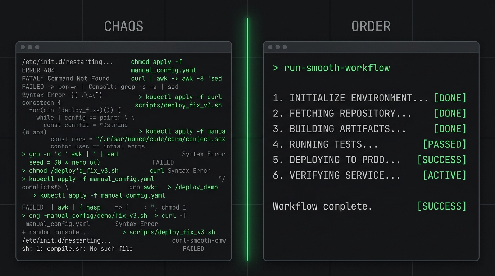

Shift your Model Context Protocol architecture from basic tool calling to autonomous, self-guiding AI developer workflows.
The transition from AI-assisted coding to true agentic software engineering is unfolding at breakneck speed.
With the advent of frontier models like Claude 3.5 and DeepSeek R1, raw intelligence is no longer the primary bottleneck restricting developer output. Instead, our engineering velocity is constrained by how effectively we equip our agentic tools with custom, self-guiding capabilities.
This is where the Model Context Protocol (MCP) becomes indispensable. While most engineers understand how to build MCP servers that expose basic tools, they frequently overlook the most powerful primitive in the protocol's architecture: Prompts.
// Why Prompts Offer the Highest Leverage
Static data references—the raw context your agent can read.
Executable actions. Inherently atomic; they execute a single action and stop, requiring manual direction for the next step.
The ultimate leverage point. End-to-end recipes for repeatable solutions, orchestrating complex sequences of tool calls and priming the agent's context window.
Manual orchestration defeats the purpose of agentic coding.

An engineer must first manually locate the dataset path, call a load_dataset tool, wait for the response,
call a suggest_analysis tool, and then
manually run specific analysis commands.
Because the agent lacks high-level context, the developer is forced to constantly consult documentation, copy-paste file references, and guide the model step-by-step. It keeps the engineer tethered to the terminal.
Embed domain-specific recipes directly into your prompts.
By implementing a slash command like /quick-data
in Claude Code, you instantly prime the agent's memory with pre-configured workflows.
"Ready to load with load_dataset. Use dataset_first_look to explore."
This self-guiding loop allows the agent to chain multiple tools together—scanning data, running correlation analyses, and generating visualizations—all from a single, high-level developer instruction.
Implementing modular prompts ensures each agentic workflow is decoupled, testable, and maintainable.
# Conceptual representation of an MCP prompt registration def get_correlation_prompt(dataset_name: str) -> dict: return { "description": f"Analyze correlations in {dataset_name}", "messages": [ { "role": "user", "content": ( f"You are analyzing the dataset: {dataset_name}.\n" "Follow this agentic workflow to discover meaningful insights:\n" "1. Run the `get_dataset_schema` tool to identify numerical columns.\n" "2. Execute the `find_correlations` tool on the numerical columns found.\n" "3. If strong correlations exist, suggest generating a visualization using `create_chart`." ) } ] }
Seamlessly feed the agent the exact cognitive path.
Tools are the necessary primitives, but prompts are the cognitive engines that scale those primitives into fully automated AI developer workflows.